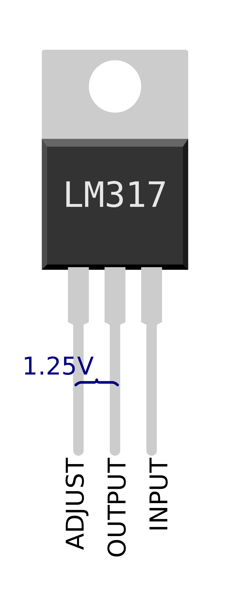

LM317 - Adjustable Positive Linear Voltage Regulator

LM317 Linear Voltage Regulator is a popular voltage regulator IC in DC circuits having three terminals. It is very easy to use and requires very less number of components to become operational. It can supply more than 1.5A of current and voltage range of around 1.25V to 37V. It can also be used as a current limiter. The desired output voltage can be adjusted in this range (1.25V to 37V) using only two external resistors.
The output voltage depends upon the values of two resistors.
LM317 Resistor/Voltage Calculator
Pin Description
| Pin Name |
Symbol |
I/O |
Description |
| ADJUST |
Adj |
I |
Adjust the output voltage |
| OUTPUT |
Vout |
O |
Voltage Output pin |
| INPUT |
Vin |
I |
Input Supply pin |
LM317 Datasheet:
ON Semiconductor™ datasheet for the LM317 can be found here:
https://www.onsemi.com/pub/Collateral/LM317-D.PDF
TI ™ datasheet for the LM317 can be found here:
http://www.ti.com/lit/ds/slvs044x/slvs044x.pdf